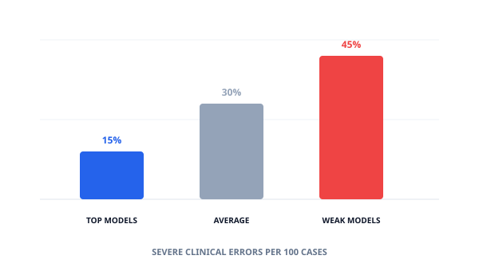
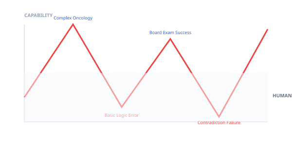
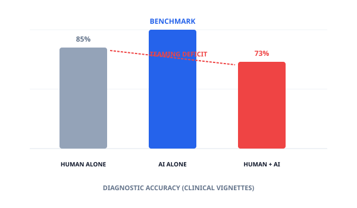

In January 2026, the ARISE network released its first State of Clinical AI Report. For healthcare leaders, its findings point to a clear challenge: building capable models is not enough. These tools also need to be tested carefully and fitted into real clinical work.
More than 1,200 AI tools have received FDA clearance, but the report found that only a fraction have been assessed in peer-reviewed randomized trials. In other words, a tool may appear promising in tests but still behave differently in the complexity of everyday clinical care.
1. AI can still make serious mistakes
The ARISE researchers tested 31 language models against 100 primary-care consultations across 10 specialties. Even the best-performing models made 12 to 15 serious clinical errors per 100 patients. Some models made more than 40.
These were not just wording mistakes. They involved diagnosis, treatment planning and patient safety. A failure rate of this kind cannot be treated as a rare exception in healthcare.

Fig 1.1: Even the best-performing models made serious errors.
2. Design can help clinicians use AI safely
The report warns that clinicians can rely too heavily on AI recommendations. In some tests, doctors working with AI performed worse than the AI alone. One reason may be that they trusted the system’s confidence and were less likely to check its answers.
AI should be designed around the way clinicians work, not simply added to a screen. The report calls for testing how people interact with these tools as part of clinical trials.

Fig 1.2: AI can perform well on some tasks and still miss basic clinical issues.
Designing for careful use
Clinicians need to know when to use an AI suggestion and when to check it. Good design can help by:
- Show the basis for a recommendation: Give clinicians information they can review, rather than only showing an answer.
- Make uncertainty clear: When the system is less certain, prompt the clinician to pause and verify.
- Reduce routine work: Use AI to help with tasks such as note-taking and inbox management, as well as to support clinical decisions.
What healthcare leaders should consider
Improving a model’s accuracy matters, but it is not the whole answer. Healthcare products also need to help clinicians recognize mistakes and fit safely into the way care is delivered.
3. AI is not equally reliable at every task
A model may answer a difficult question about a rare disease and still miss a basic problem, such as a contradiction in a patient’s medication list.
Clinicians need to understand where a system performs well and where it may fail. Product teams should make those limits clear so people know when to rely on the tool and when to make their own assessment.

Fig 2.1: AI support can sometimes reduce clinicians’ vigilance.
Bottom line
The priority is not only to build more powerful models. Healthcare teams also need to test AI in realistic settings and design it to support safe decisions and existing workflows. In healthcare, the way people interact with AI is part of the safety system.
Review your clinical AI experience
Are your clinical AI tools clear, useful and safe for the people who rely on them? Let’s discuss how to test and improve the experience.
Discuss clinical AI design